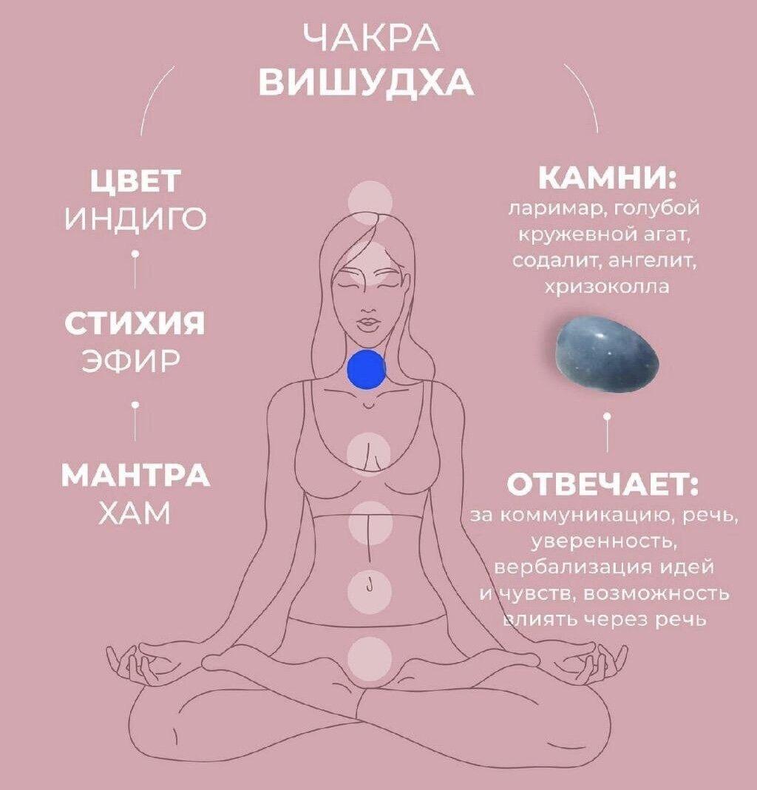

5 чакра "Вишудха"|Расшифровка, где находится, как раскрыть
Чакры - это энергетические центры в теле человека, которые отвечают за наше самочувствие. Подробнее об этом здесь, а в этой статье мы поговорим о пятой чакре - Вишудха.

5 чакра "Вишудха" (горловая) - отвечает за общение, самовыражение и способность говорить правду.
- Расположение: область горла, на уровне щитовидной железы
- Внешний вид: синий лотос с шестнадцатью лепестками, внутри которого находится треугольник, а в нём круг
- Функции: отвечает за проявление себя в обществе, креативность и честность